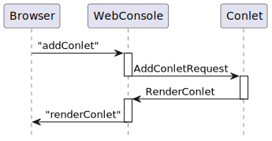

public class AddConletRequest extends RenderConletRequestBase<String>
Sent to the console (server) if a new web console component instance of a given
type should be added to the web console page. The console server usually
responds with a RenderConlet event that has as payload the
HTML that displays the web console component on the console page.
Properties may be passed with the event. The interpretation
of the properties is completely dependent on the handling web console
component. It is recommended to use Strings as keys and JDK types
as values. This avoids classpath dependencies on the web console component
that is to be added.
The event’s result is the web console component id of the new web console component instance.

| Constructor and Description |
|---|
AddConletRequest(RenderSupport renderSupport,
String conletType,
Set<Conlet.RenderMode> renderModes)
Creates a new event.
|
AddConletRequest(RenderSupport renderSupport,
String conletType,
Set<Conlet.RenderMode> renderModes,
Map<?,?> properties)
Creates a new event.
|
| Modifier and Type | Method and Description |
|---|---|
AddConletRequest |
addProperty(Object key,
Object value)
Convenience method for adding properties one-by-one.
|
String |
conletType()
Returns the web console component type
|
AddConletRequest |
ifPresent(Object key,
BiConsumer<Object,Object> action)
Convenience method that performs the given action if a property
with the given key exists.
|
boolean |
isForeground()
Indicates if the web console component is to be put in the foreground.
|
Map<Object,Object> |
properties()
Returns the properties.
|
AddConletRequest |
setForeground(boolean foreground)
Determines if the web console component will be put in the foreground.
|
renderModes, renderPreview, renderSupportaddCompletionEvent, associated, cancel, channels, channels, completionEvents, currentResults, defaultCriterion, forChannels, get, get, handled, handlingError, isCancelled, isDone, isEligibleFor, isStopped, processedBy, results, results, setAssociated, setChannels, setRequiresResult, setResult, stop, tieTo, toStringdisableTracking, enqueued, firstResultAssigned, isTrackedpublic AddConletRequest(RenderSupport renderSupport, String conletType, Set<Conlet.RenderMode> renderModes)
Creates a new event.
renderSupport - the render supportconletType - the type of the web console componentrenderModes - the render modespublic AddConletRequest(RenderSupport renderSupport, String conletType, Set<Conlet.RenderMode> renderModes, Map<?,?> properties)
Creates a new event.
renderSupport - the render supportconletType - the type of the web console componentrenderModes - the render modesproperties - optional values for properties of the
web console component instancepublic AddConletRequest setForeground(boolean foreground)
Determines if the web console component will be put in the foreground.
Defaults to true for added web console components as they are
most likely supposed to be seen.
foreground - the foregroundpublic String conletType()
Returns the web console component type
public Map<Object,Object> properties()
Returns the properties. Every event returns a mutable map, thus allowing event handlers to modify the map even if none was passed to the constructor.
public AddConletRequest addProperty(Object key, Object value)
Convenience method for adding properties one-by-one.
key - the property keyvalue - the property valuepublic AddConletRequest ifPresent(Object key, BiConsumer<Object,Object> action)
Convenience method that performs the given action if a property with the given key exists.
key - the property keyaction - the action to performpublic boolean isForeground()
RenderConletRequestBaseIndicates if the web console component is to be put in the foreground.
isForeground in class RenderConletRequestBase<String>